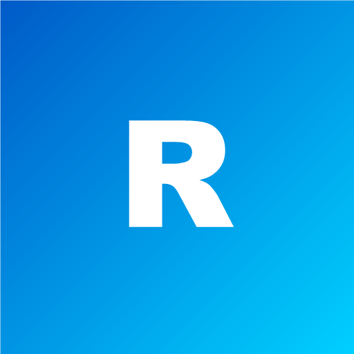

App POS y cajas
App POS y cajas
Instala REFRIMAR POS como aplicación en la computadora de caja o en el teléfono: abre en su propia ventana, con su ícono, sin barra del navegador.
¿Listo para facturar?
Optimiza tu facturación con la app POS. Simple, rápida y funciona aunque se caiga el internet (las ventas se guardan y se envían solas).

Esta caja
Cargando…
Impresora térmica (puente)
Para imprimir tickets directo, sin ventana de impresión. Descarga los dos archivos en la misma carpeta y abre INICIAR_PUENTE.bat.
Comprobando impresora…